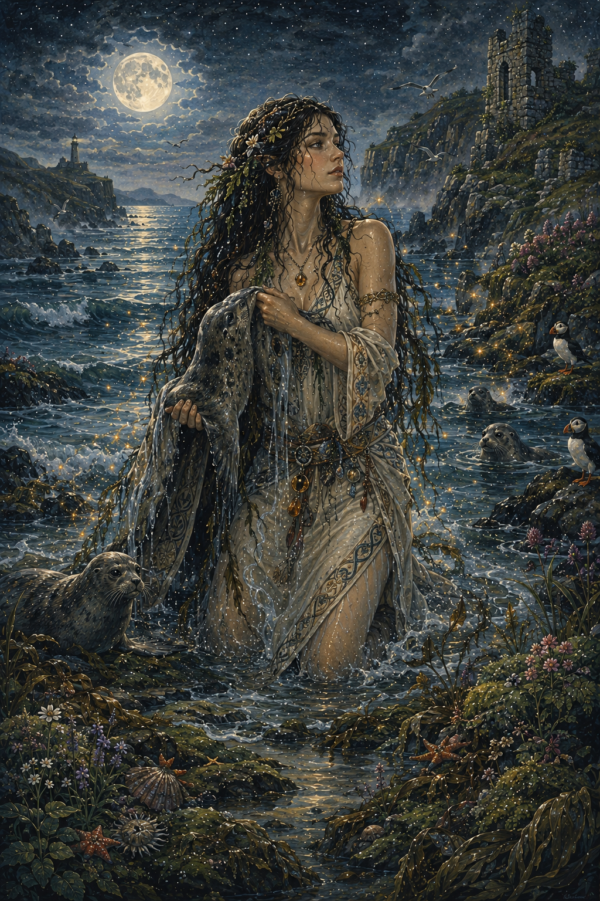
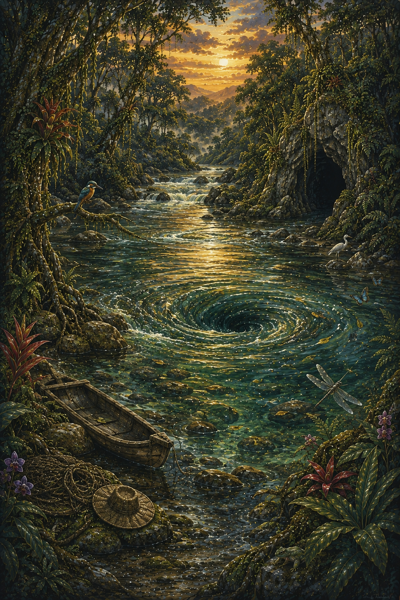
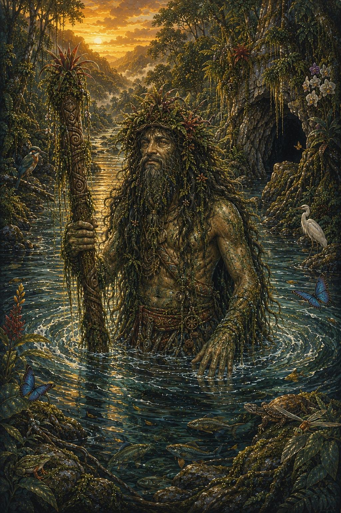
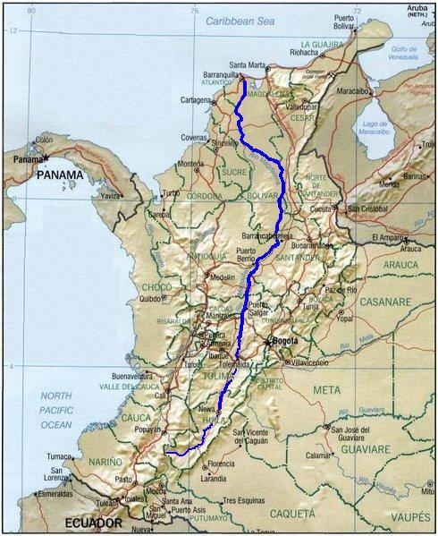
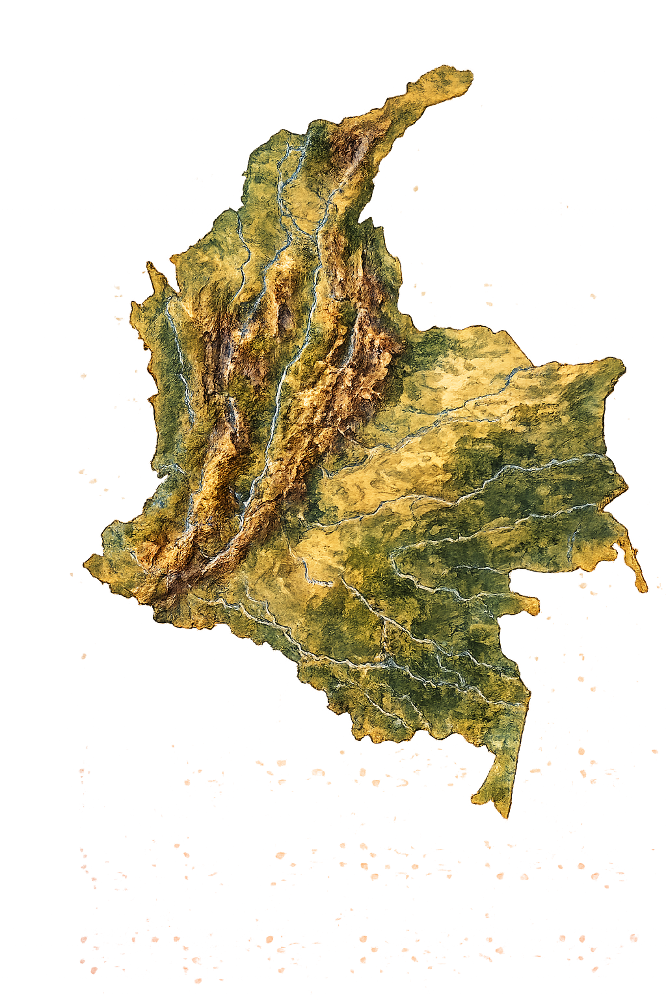
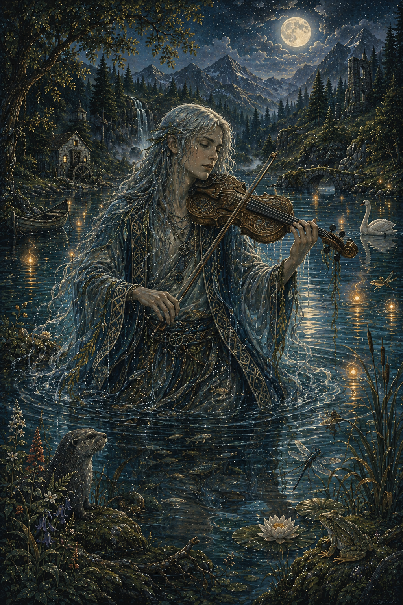
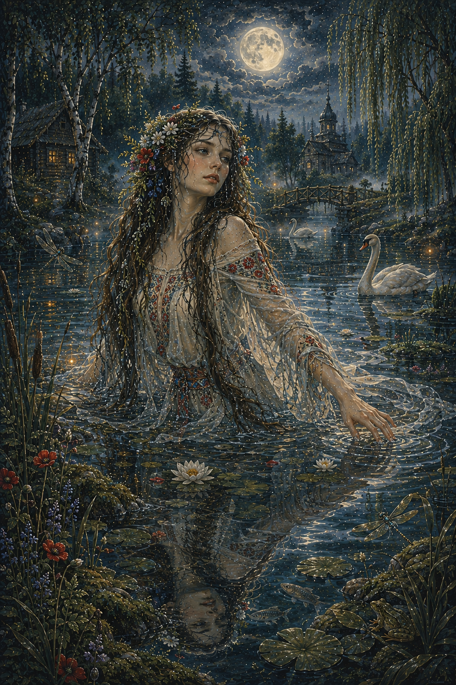

Selkie
Ser del folclore celta con conexión entre el mar y la forma humana.
El Mohán es una de las figuras más representativas del folclore colombiano, especialmente en las regiones cercanas al río Magdalena y sus afluentes. Se le describe como un ser de apariencia salvaje, con larga cabellera, barba abundante y una gran conexión con el agua.
Es considerado el guardián de los ríos y protector de la naturaleza, aunque también puede ser un espíritu travieso y peligroso para los humanos.

Según la tradición oral, el Mohán habita en cuevas, remolinos y zonas profundas de los ríos, desde donde vigila a quienes se acercan al agua.
Se dice que protege los peces y castiga a quienes contaminan o abusan de los recursos naturales.


Muchos pescadores afirman haber sentido la presencia del Mohán mientras trabajan en el río, describiéndolo como una figura que observa desde la oscuridad o mueve las aguas sin explicación.
En algunos relatos, también es descrito como un ser seductor que atrae a las personas hacia el agua.
El Mohán simboliza la relación profunda entre el ser humano y los ríos, representando tanto su poder como su peligro.
También funciona como una figura de respeto hacia la naturaleza y sus fuerzas incontrolables.
El Mohán es originario del folclore de la región Andina y Caribe de Colombia, especialmente en zonas cercanas al río Magdalena.
Es una figura muy presente en comunidades ribereñas y campesinas.


El Mohán representa el respeto por los recursos naturales, especialmente el agua, y la importancia de mantener el equilibrio ecológico.
También simboliza el misterio de los ríos y su papel central en la cultura popular colombiana.

Ser del folclore celta con conexión entre el mar y la forma humana.

Espíritu acuático de la mitología germánica asociado a ríos y lagos.

Espíritu femenino del agua en la mitología eslava.